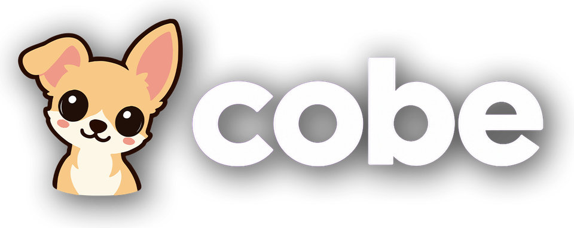

Cobe Support
Cobe is a media player for Apple TV. It plays the playlists, media servers and shared folders that you add yourself.
Email: peter.verhoeven@xlamediagroup.com
New to Cobe? Read the Manual.
Getting started
- Open Cobe and choose + Add Playlist.
- Pick the kind of source:
- Your own media: Shared Folder (NAS), Jellyfin, Emby, Plex or your own local M3U
- Your own playlists: M3U or Xtream
- Fill in the address and login of your playlist or server, and choose Save. For Plex, Cobe shows a code to enter at plex.tv/link instead.
Questions
Does Cobe come with channels or films?
No. Cobe is empty until you add your own sources. We do not sell or provide any content.
A channel does not play.
Check that the stream works outside Cobe too. If you added the same channel from more than one source, Cobe automatically switches to another copy.
How do I cancel my subscription?
Subscriptions are handled by Apple. On your Apple TV, go to Settings > Profiles and Accounts > your profile > Subscriptions. (On tvOS 18: Settings > Users and Accounts > your account > Subscriptions.)
I bought Cobe on one Apple TV. Does it work on my other one?
Yes, on every Apple TV signed in with the same Apple Account.